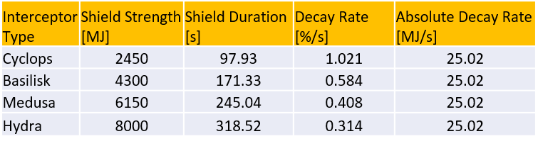
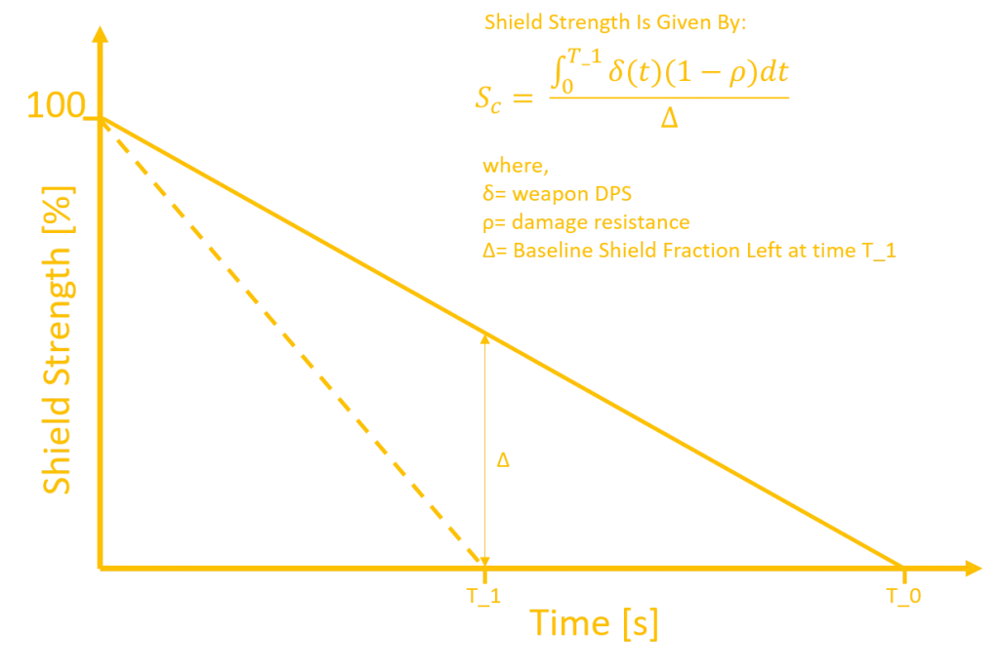
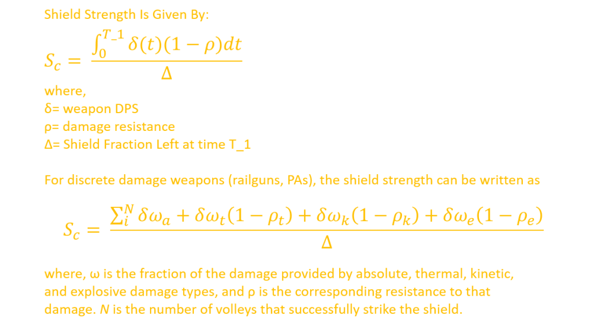
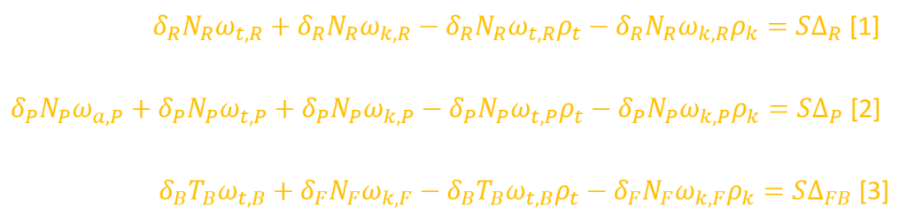
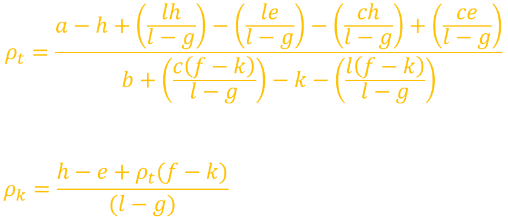
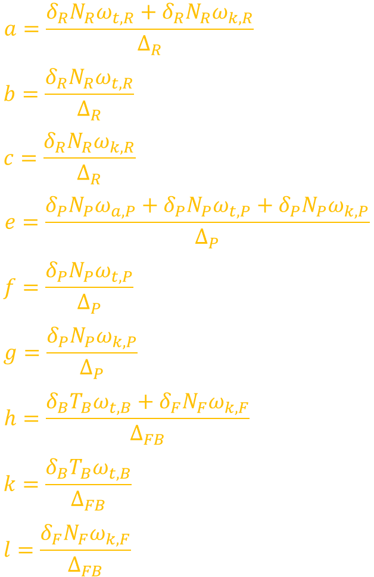
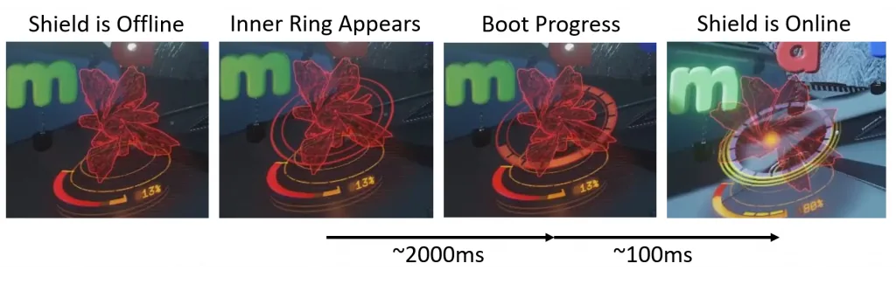
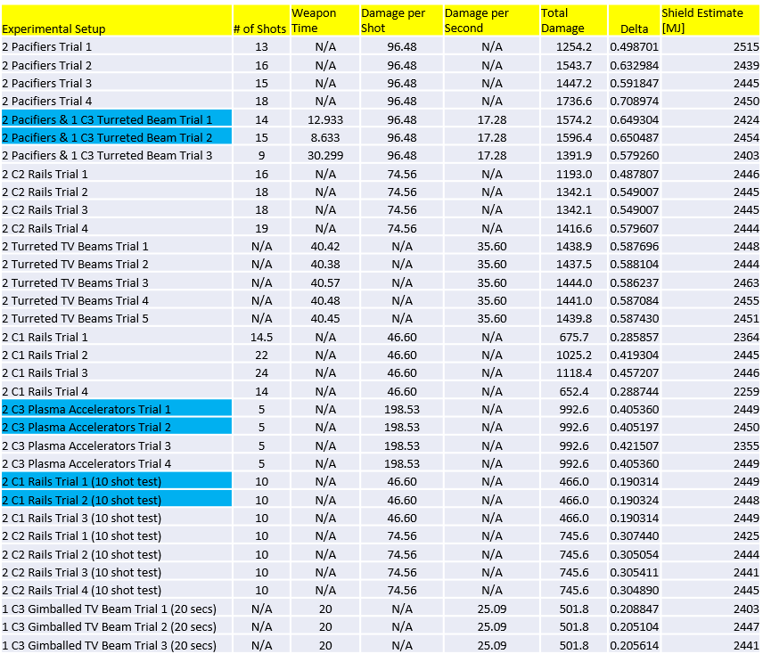
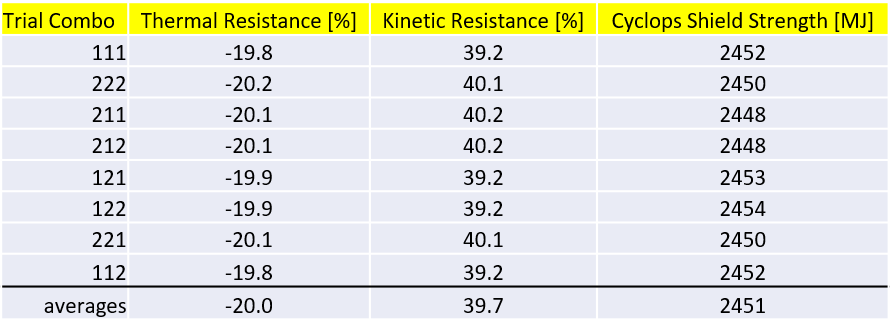

The subject of this article is the accurate estimation of Thargoid Interceptor shield strength. An initial analysis was carried out to estimate these values and is referenced here in its entirety [1]. Given the success of the mathematical techniques used to accurately estimate the damage partitioning in human weapons such as Plasma Accelerators and Railguns [2], we decided to use similar techniques to get more accurate and mathematically robust shield strength estimates.
By employing a model of Interceptor shield decay and human weapon damage, the shield strength of all four Interceptor variants was measured. The table below shows the starting shield strength of each Interceptor.

In addition to the shield strength estimates, we were able to use linear algebra to verify that indeed Thargoid Interceptors share the same resistances and vulnerabilities as unengineered human shield generators. The magnitude of each damage component in a given weapon was scaled according to the standard resistance of 50%, 40%, and -20% for explosive, kinetic, and thermal damage, respectively.
Additionally, the following set observations were made:
The cornerstone of this analysis is that Interceptor shields exhibit a linear shield decay rate. The shield strength of an Interceptor will decay from 100% to 90% at the same rate that it does from 10% to 0%. When left unperturbed, the shield strength of a given Interceptor variant will decay from 100% to 0% in a fixed period of time T_0. Now, when damage is inflicted on the shield by a weapon, the shield will reach a 0% sooner, at a time T_1. This can be easily visualized by considering the unperturbed case and the scenario where the shield is continuously damaged by a beam weapon, as shown in the figure below.

The essence of the argument is that we know how much damage was dealt to the shield, and we know what fraction of the shield was supposed to be left at time T_1. Based on those two pieces of information—the damage dealt by the weapon and the baseline fractional shield at a given moment—we can infer the initial shield strength of the Interceptor shield. The formal equations for estimating the shield strength are given below.

The damage partition values for Railguns and Plasma Accelerators were taken from a detailed mathematical analysis carried out on the subject [2].
Now, where the current shield strength analysis differs from the first one performed [1] is the use of linear algebra to simultaneously determine the Interceptor’s shield strength and its kinetic and thermal resistances. In the previous analysis the Interceptor’s shield resistances were hypothesized to be the same as those of unengineered human ships, and the mutual consistency of results across various weapons was used to build confidence in that hypothesis. Here, we set up a system of equations and solve for the shield strength, thermal resistance, and kinetic resistance. Since explosive resistance was already fairly well determined to be 50% in the previous shield strength analysis [1], we will not treat it in this study.
The system of equations below relate the damage from Railguns, Plasma Accelerators, and a combination of Fragmentation Cannons and Beam Lasers to the Cyclops shield strength.

The first equation corresponds to Railguns, the second to Plasma Accelerators, and the third to a tandem use of Fragmentation Cannons and Beam Lasers; the latter combination was used instead of an Incendiary Multi-cannon because the kinetic fraction of the damage, 10%, is too low for accurate measurements.
The solution of the system of equations for the thermal and kinetic resistances is given below, and, of course, the shield strength is given by any of the three equations above.

where,

Most of the parameters in the equations above are known, such as damage per shot. The parameters that need to be measured in the field are number of shots fired (in the case of beam weapons, time on target) and the corresponding fractional shield loss.
To start experiments were conducted on the Cyclops Interceptor variant because of its regular cruise speed and ease of engagement. The relative weakness of the Cyclops “panic” shield made it easier to acquire data with a variety of weapons and to exactly understand how each of them deals damage.
A baseline characterization of each Interceptor variant shield was first established. This consisted of simply noting the duration of shield and the corresponding percentage decay rate. After a heart is destroyed, the Interceptor enters a brief “staggered” stage where it puts up its shield. There are a number of steps it takes to put the shield online, as illustrated below.

The timestamp of the moment when the shield comes online is recorded. Then we patiently wait until the shield decays to 0%. Then later the timestamp of the moment when the shield reaches 0% is recorded. The time difference between those two timestamps becomes the baseline shield duration.
After the baseline for each shield was established, data acquisition experiments consisted of dealing persistent damage to the Interceptor’s shield and carefully taking note of the amount of damage dealt and the exact time differential between the moment the shield came online and eventually taken offline. A video recording was made of each data acquisition run and the relevant parameters were extracted by analyzing the video on a frame-by-frame basis.
The following weapon configurations were tested against the Cyclops shield:
Only the first three set of weapons served as inputs to the damage equations enumerated in the previous section. The last four were used to ensure general consistency of results.
A Faulcon DeLacy Krait MkII was used in these experiments because it has a favorable hardpoint configuration that can carry the weapons listed above.
The results of a multitude of experimental trials with various weapon configurations is tabulated below. The relevant parameters for each trial is listed, as well as a preliminary measurement of the Cyclops shield strength, which assumes unengineered human shield generator resistances.

It should be noted that the assumed damage output for C3 Beam Lasers had to be revised slightly, with both kinds of C3 Beam Lasers having 3% more damage than listed in the outfitting UI. These damage values will be tested more carefully in a future study. We are confident that our assumed values are more accurate than those listed in the outfitting UI, which are known to be inaccurate [3].
The average of all preliminary measurements is around 2435 MJ with a standard deviation of 42 MJ. It was found the results from Railguns tended to be the most consistent across trials. Surprisingly, Beam Laser estimates tend to have the highest level of variation, which might be due to the effects of beam jitter.
The experimental trials highlighted in blue were chosen to serve as inputs to the system of equation solutions because they are mutually consistent, thus minimizing experimental noise. The solutions were computed assuming various combinations of the highlighted experimental inputs. For instance, the first trial of Plasma Accelerators results were combined with the corresponding first trials of Railguns and Pacifier & Beam trials, then later other combinations were applied. The solutions for a number of combinations are tabulated below.

The shield estimates and resistances are consistent for the different combination of input parameters. The average results clearly point to -20% thermal resistance, 40% kinetic resistance, and a Cyclops shield strength of 2450 MJ. These results confirm without a doubt that Thargoid Interceptors share the same shield resistances as human shielding technology. Given that the Cyclops shield duration is 97.93 seconds, the absolute shield decay rate is 25.02 MJ/s.
As noted in the theory section, the previous analysis [1] already determined the resistance to explosive damage (50%) with a good degree of confidence.
Now, in the previous shield estimate analysis it was experimentally found that the shield strength of more powerful Interceptor variants was progressively higher than that of the Cyclops. More importantly, it was found that the absolute shield decay rate was the same for all Interceptor variants. Given the consistency of the Cyclops shield estimates in this analysis and the previous one, we can safely estimate the shield strength of higher Interceptor variants via extrapolation, that is, by simply using the product of the absolute shield decay of 25.02 MJ/s with the measured shield durations enumerated in Section 4.
The shield strength estimates for all Interceptor variants is tabulated below. The Hydra has an incredibly high initial shield strength of 8000 MJ, which is why it takes over 5 minutes for it to fully decay. It should be noted that, with the exception of the Cyclops Interceptor, the values listed in the table below were rounded to the nearest multiple of 50 MJ to reflect errors in the measured input parameters to the analytical solutions.
The initial shield strength of each Interceptor variant has been measured. A linear decay model and robust linear algebra techniques were employed to obtain accurate shield strength estimates for all Thargoid Interceptor variants. All Interceptor variants have a shield that exhibits the same set of resistances as unengineered human shield generators. Other notable observations about the weapons employed in this analysis were made, as indicated in the Executive Summary.
Future studies will study the Interceptor shield strength in engagements scenarios involving multiple pilots. Additionally, the effect of Guardian weaponry on the shield will be studied.